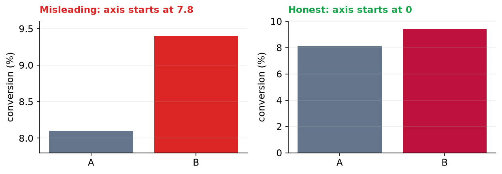
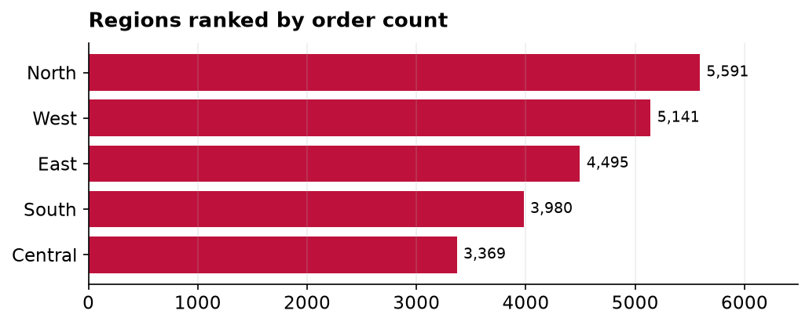

Practice Challenges: Worked Solutions
Model answers for the five challenges, with the visuals and the headlines they should produce.
Chapter 157, Communicating Insights & Storytelling with Data. The two writing tasks show example answers; yours may differ in wording but should share the instinct.
Challenge 1: Rewrite the lede
The task is to take a finding stated method-first and rewrite it bottom-line-up-front for an executive. A good answer leads with the decision and keeps the statistic as support.
Before (buries the lede): “We ran an ordinary least squares regression of satisfaction on four drivers, and the model achieved an R-squared of 0.84.”
After (BLUF, for an executive): “Ease of use is the biggest lever on customer satisfaction, by a clear margin, so it is where we should invest first. Our analysis explains the large majority of what makes customers happy, and ease of use tops the list.”
Challenge 2: Fix the misleading chart
The original chart put the two A/B conversion rates on an axis starting at 7.8 percent, which made the new version look several times taller than the old one. Redrawn with a zero baseline, the bars tell the truth: a real but modest improvement, not a landslide.

Challenge 3: A report-ready table
Format the revenue-by-region figures for a reader: currency with thousands separators, a share column, the largest value emphasized, and a total row so the whole and the parts sit together. This is the table a statistician drops into the document.
| Region | Revenue | Share |
|---|---|---|
| North | $535,879 | 24.9% |
| West | $489,393 | 22.7% |
| East | $422,289 | 19.6% |
| South | $379,930 | 17.6% |
| Central | $327,447 | 15.2% |
| TOTAL | $2,154,938 | 100.0% |
Challenge 4: Rank by orders, and rewrite the lede
Ranking the regions by number of orders rather than revenue can tell a different story, since a region may have many small orders or a few large ones. Here the ranking barely changes, which is itself the finding.

Bottom line: “North leads not just in revenue but in sheer order volume, so it is our busiest market as well as our biggest, and the natural place to protect first.”
Challenge 5: Translate the metric for two audiences
The same A/B result, told for two readers. Each gets the number that maps to the decision they own, the rate and the lift for the team that optimizes conversion, the dollar impact for the person who funds the change.
Headline for the Growth team: “The new checkout converts 16 percent better than the current one, 9.4 percent against 8.1 percent, and the result is statistically significant.”
Headline for the CFO: “Rolling out the new checkout should convert about 1.3 more buyers for every 100 visitors. On our current traffic that is a meaningful revenue gain for a one-time design change, with little downside.”
Same finding, two framings. Neither hides the uncertainty; each simply leads with the number its reader will act on.